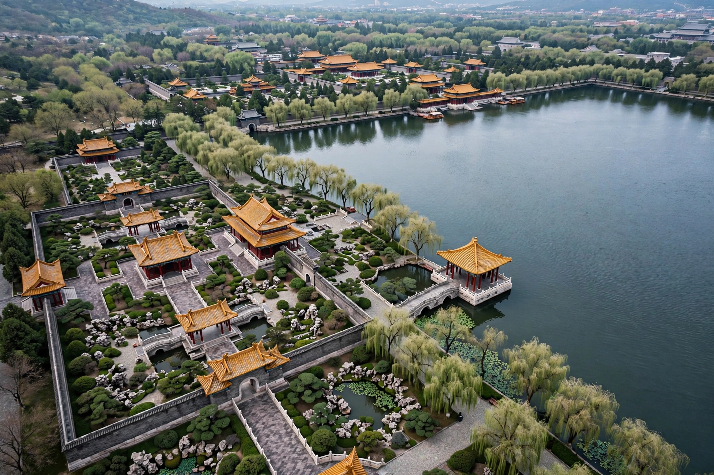

| Zhongnanhai | |
|---|---|
 | |
| Location | Xicheng District, Beijing, China |
| Function | Headquarters of the CCP and State Council |
| Area | ~100 hectares (250 acres) |
| Adjacent | Forbidden City (west side) |
Zhongnanhai (Chinese: 中南海) is a former imperial garden in Beijing, China, adjacent to the Forbidden City. It serves as the central headquarters for the Chinese Communist Party (CCP) and the State Council (central government) of the People's Republic of China. The compound houses the offices of the CCP General Secretary, the Politburo Standing Committee, and other senior leaders, and the term "Zhongnanhai" is often used as a metonym for China's senior political leadership, comparable to "the Kremlin" or "the White House".
The site takes its name from the Zhonghai ("Central Sea") and Nanhai ("Southern Sea"), two of a chain of lakes excavated and landscaped from the Jin and Yuan dynasties onward. Under the Ming and Qing dynasties the gardens formed part of the Imperial City west of the Forbidden City, used for leisure, ritual, and occasional residence by emperors. The Qing dowager empress Cixi lived there for periods, and the Guangxu Emperor was confined on an island in the Southern Sea after the failed Hundred Days' Reform of 1898.
After 1949, the new Communist government chose Zhongnanhai as its headquarters. Mao Zedong and other leaders took up residence there, and major state buildings, including the Purple Light Pavilion (Ziguangge), used for receiving foreign guests, were built or adapted within the grounds.
The complex is divided by the lakes into northern and southern sections and is closed to the general public. It gained international attention in April 1999 when thousands of Falun Gong practitioners gathered in a silent protest outside its walls. The main entrance is the Xinhua Gate ("New China Gate") on Chang'an Avenue, flanked by slogans reading "Long live the great Chinese Communist Party" and "Long live the invincible Mao Zedong Thought".